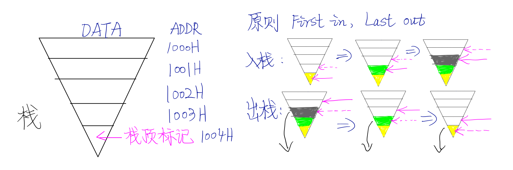

3.2 栈机制 与 PUSH、POP 指令
栈机制与模型

栈顶标记永远指向栈最上面的一个数据。栈中数据的存放大致如图所示，此图的缺陷在于没有表示出每个栈空间内单个元素的大小是相等的；此图中的地址为 4 位 HEX 地址，不符合 8086 CPU规程，8086 CPU 使用 5位 HEX地址。
进出栈的原则是： First in, Last out.
CPU 的 栈机制
在这一段中，我们将着重讲解入栈、出站和相关的存储过程。仍以 8086 CPU 为例。存储原则：高位地址存储高位字，低位地址存储低位字。
我们首先初始化一段内存 10000H～1000FH ，定义为一段栈空间。然后我们用 MOV AX,0123 指令将数据传入寄存器 AX，此时栈顶标记指向 1000FH；之后使用 PUSH AX 指令将其压入栈中，此时 01 写入到 1000FH 地址中，23 写入到 1000EH 地址中，栈顶标记指向 1000EH，完成一次入栈过程。 （地址从高地址向低地址方向增长。）
然后出栈过程则恰好相反，POP AX 从栈顶元素 1000EH 中读出数据，存入 AX，栈顶标记指向 1000FH，完成一次出栈过程，原有 1000EH 中的数据没有改变，将在下一次入栈中被直接覆盖。
如何确定栈顶标记
8086 寄存器中，有两个寄存器，栈段寄存器 SS (Stack segment register) 和 栈指针寄存器 SP (Stack pointer register)，栈的段基址存放在 SS 中，段指针存放在 SP 中，在任意时刻 SS:SP 永远指向栈顶元素。无论在入栈或是出栈时，SS、SP永远先指向欲读或欲写入地址，再从其中读出或写入。
栈顶超界问题
栈中数据的传送以字为单位，每个字长为 16 位，占用 2 个栈内元素空间。每次传送数据时，栈顶标记所在地址均会加或减 2 个偏移地址，这样便可能产生一个问题：如果栈空间在最初 Allocate 的时候规划不当，会不会出现栈顶标记指出栈空间的情况？
答案是显然的，当栈满时继续使用 PUSH 命令入栈，或当栈空时使用 POP 命令出栈，都将发生栈顶超界问题。
此时，栈顶标记继续指向栈外空间，栈外空间的代码被继续覆盖，将会造成 FATAL ERROR，我们务必在编程时防止此类事件的发生。
延伸阅读： 8086 系列 CPU 由于设计相比当代 CPU 较为落后，在 DOS 下以 16 Bit 字长工作在 实模式，导致无法对硬件有支持较为良好的全面控制，栈顶超界将直接导致 Fatal Error。当代 CPU 设计以 32 Bit 或 64 Bit 工作在保护模式下，系统有相对良好的设计确保此类栈顶超界问题发生时不会修改到栈外空间的代码，并抛出 Exceptions，以保障计算机运行的稳定性。
PUSH、POP指令
PUSH 指令是入栈，POP 指令是出栈，指令的几种形式如下所示：
- PUSH 寄存器 / 段寄存器 / 内存单元 ；将寄存器中的内容入栈
- POP 寄存器 / 段寄存器 / 内存单元 ；出栈，并用指定寄存器接受数据
在对内存单元进行操作时，可以只给出偏移地址，CPU 将自动从 DS 寄存器中取出段基址。
基础的入栈操作主要包括：
MOV AX, 1000H
MOV SS, AX ;设定栈顶的段基址
MOV SP, 0010H ;设定栈顶的偏移地址
PUSH AX ;入栈：First in, Last out
PUSH BX
PUSH DS
POP DS ;出栈：正好与入栈顺序相反
POP BX
POP AX
小结
PUSH 和 POP 指令的本质是一种内存传送指令，8086 CPU 不提供栈空间的大小管理功能，PUSH 指令的执行步骤是：(1) SP -= 2 (2) 向 SS:SP 指向的字单元中送入数据，POP 指令的执行步骤是：(1) 从 SS:SP 指向的字单元中读取数据 (2) SP += 2
栈段
我们将一组长度为 N、地址连续、起始地址为 16 的倍数的内存空间当作专门存储数据的内存空间，这段数据空间中我们帮他当作栈空间来用，从而定义了一个栈段。这一段定义是人为的，仅仅是一种编程时的安排，CPU 并不会给这段数据空间打上栈空间的 TAG 。我们需要配合 SS、SP 寄存器完成栈段的 PUSH、POP 读写操作。
Quiz Time：一个栈段的最大长度可以设为多少？为什么？
一个栈段的最大长度是 64 KiB，因为定义完栈的初始地址之后， SP == 0，栈满后，再次压数据入栈，栈顶将环绕，此时 SP 返回为 SP == 0 ，覆盖原来栈中数据的内容，一个栈段的长度就是 0000H ～ FFFFH ，所以一个栈段的大小为 64 KiB。
段与栈
段的实质是人为规定的一段连续的存储空间，栈的实质是人为规定的一个段空间。数据段、代码段、栈段都是人为定义的。
当我们访问数据段时，将段地址放入 DS 中，CPU 在执行 ADD、SUB、MOV 等指令时就将数据段中的内容当作数据来访问；
当我们访问代码段时，将段地址和入口指令偏移地址分别传入 CS、IP当中，CPU 就将代码段中的内容当作代码执行；
当我们访问栈段时，将栈顶单元段基址和栈顶单元偏移地址分别放入 SS、SP中，CPU 在执行 PUSH、POP等指令时就将我们定义的栈段当作栈空间来使用。
可见，一段内存，可以既是代码的存储空间，又是数据的存储空间，还可以是栈空间，也可以什么都不是，关键在 CPU 中各个寄存器的设置，即 CS、IP、SS、DS、SP 的指向。
修改栈段寄存器 SS 和 SP 的两条指令会被连续执行，这与中断机制有关，我们后续将进一步学习。